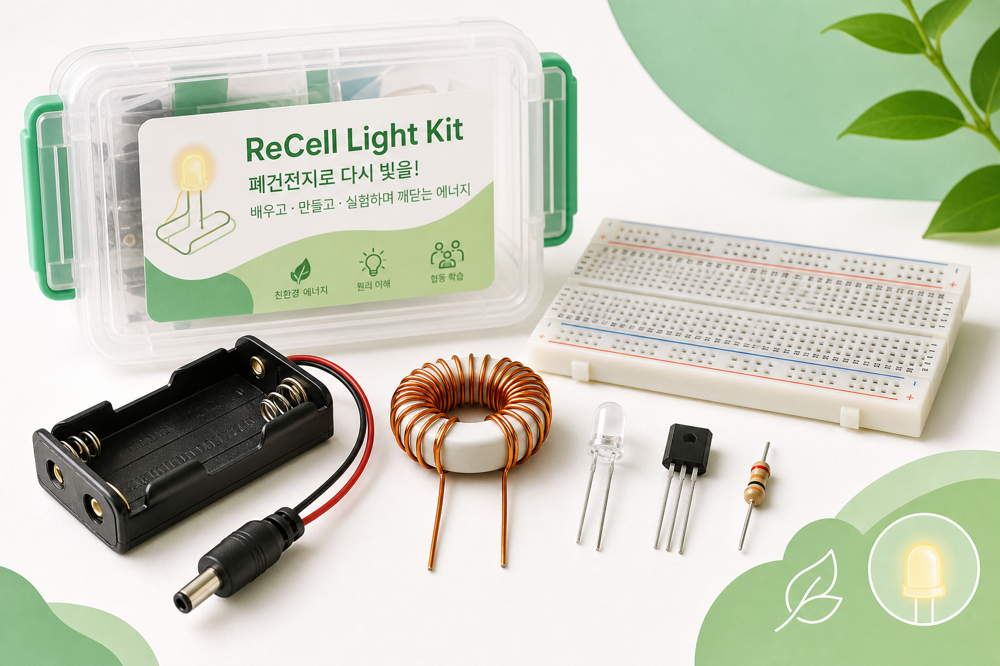
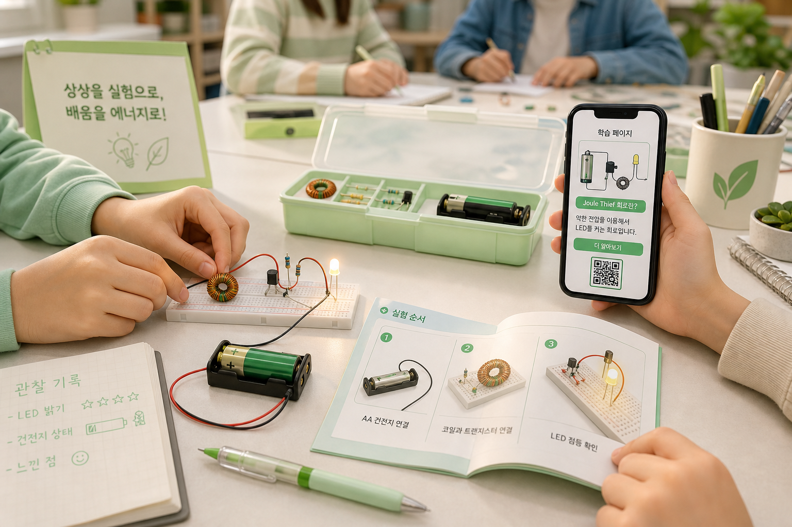

목적
버려지는 배터리에도 남은 에너지가 있을 수 있음을 빛으로 확인합니다.
제품 소개
리셀라이트 키트는 약해진 AA 건전지의 남은 에너지를 LED 빛으로 보여주며, 전자회로와 에너지 재사용을 함께 배우는 체험형 키트입니다.

버려지는 배터리에도 남은 에너지가 있을 수 있음을 빛으로 확인합니다.
중학생, 전자회로 초급자, 교육센터 체험 활동 참여자에게 적합합니다.
납땜 없이 브레드보드에 부품을 꽂아 안전하게 조립합니다.
| AA 건전지 홀더 | 낮은 입력 전압을 공급합니다. 누액이 있는 건전지는 사용하지 않습니다. |
|---|---|
| 토로이드 코일 | 에너지를 자기장 형태로 잠시 저장하고 방출하는 핵심 부품입니다. |
| NPN 트랜지스터 | 회로가 빠르게 켜지고 꺼지도록 도와 LED 점등에 필요한 순간 전압을 만듭니다. |
| 저항과 LED | 저항은 전류를 조절하고, LED는 회로 결과를 빛으로 보여줍니다. |
| 브레드보드 | 납땜 없이 부품을 꽂고 다시 고칠 수 있어 교육용 실습에 적합합니다. |
실제 부품 배치와 회로도를 맞춰 초보자가 위치를 헷갈리지 않게 돕습니다.
전기가 어느 방향으로 흐르는지 화살표로 보여주어 원리 설명이 쉬워집니다.
LED가 안 켜질 때 LED 극성, 코일 방향, 트랜지스터 방향을 순서대로 점검합니다.
일반 LED 회로와 Joule Thief 회로를 비교해 회로 설계의 차이를 직접 확인합니다.
종이 설명서가 부족한 부분을 웹페이지로 보완합니다.
교육센터 실습 후 피드백을 수집해 개선 방향을 정할 수 있습니다.
